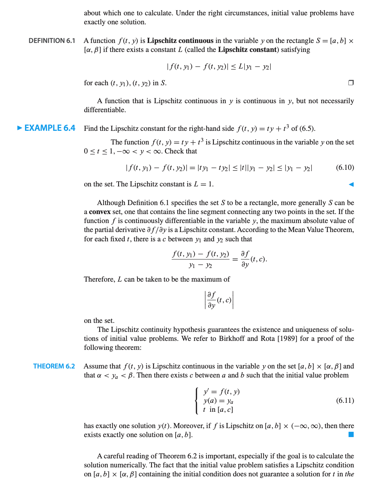
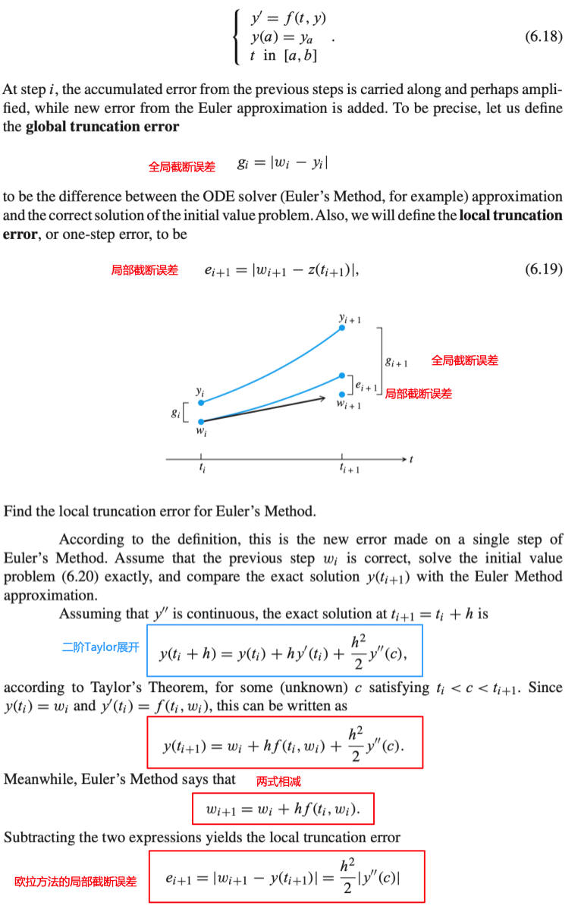
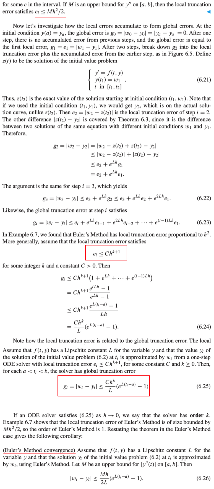

欧拉方法
欧拉方法
OrdinaryDifferentialEquation.euler — Method欧拉方法
euler(f, a, b, y_0, n)欧拉方法是最简单但也是最基本的求解常微分方程问题的方法
欧拉方法主要思想：欧拉方法几何表示是在给定常微分方程的斜率场中，通过跟随箭头计算来“求解”微分方程，从初始条件$(t_0, y_0)$开始，然后沿着在那里指定的方向。 在移动很小的距离后，在新点$(t_1, y_1)$重新计算斜率，根据新的斜率继续移动，重复这个过程。
但这个过程中将带来误差，这是由于在斜率计算中，不会完全沿着正确的斜率方向移动。但是如果斜率变化足够缓慢，可能得到初值问题的解的一个足够好的近似。
初值问题:
$\qquad \left \lbrace \begin{aligned} &y' = f(t, y) \\ &y(a) = y_0 \\ &t \in [a,b] \end{aligned} \right.$
欧拉方法公式
其中h表示t轴方向的步长
$\qquad \begin{aligned} \omega_i &= y_0 \\ \omega_{i+1} &= \omega_i + hf(t_i, \omega_i) \end{aligned}$
Example
对于初值问题:
$\qquad \left \lbrace \begin{aligned} &y' = ty+t^3 \\ &y(0) = 1 \\ &t \in [0,1] \end{aligned} \right.$
原函数：$y= 3e^{t^2/2}-t^2-2$
注意：
- 从下面的例子可以看到，由于欧拉方法使用有限步，每步的斜率的变化以及近似并不能精确地的贴近，误差非0。
- 误差在随着步长的下降而下降，也就是说，误差看起来和步长成正比
julia> test_method(euler) # 分别表示：步数 步长 误差
10×3 Array{Float64,2}:
5.0 0.2 0.315516
10.0 0.1 0.171807
20.0 0.05 0.0899184
40.0 0.025 0.0460369
80.0 0.0125 0.0232979
160.0 0.00625 0.0117201
320.0 0.003125 0.00587804
640.0 0.0015625 0.00294353
1280.0 0.00078125 0.0014729
2560.0 0.000390625 0.000736731function test_method(method)
y(t) = 3*exp(1)^(t^2/2)-t^2-2
dy(t, y) = t*y + t^3
a,b = [0,1]
result = zeros(10,3)
n = 5
for i = 1:10
h = 1/n
err = abs(y(1) - method(dy, a, b, 1, n))
result[i, :] = [n h err]
n = 2n
end
return result
endLipschitz连续

局部和全局截断误差

局部截断误差和全局截断误差的关系
- 局部截断误差和$h^{k+1}$成正比
- 全局截断误差和$h^k$成正比
对于欧拉方法
- 局部截断误差和$h^{2}$成正比
- 全局截断误差和$h^1$成正比
欧拉方法是一阶的
